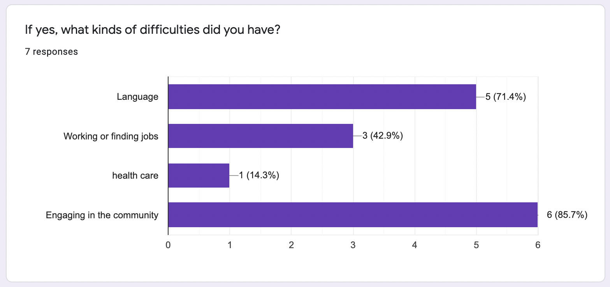

SOAR
App Design


Immigrants value a smooth transition and improvements in their quality of life. Usually, those who immigrate to the United States are motivated by the “American Dream,” where they seek new opportunities for careers, investments, and lifestyles. Many of them seek a better environment for their families and themselves, and better education for their children. Their goals are to achieve most of the motivation mentioned. In general, immigrants strive to improve their financial situation, improve the living situation of their family, receive higher education, and enjoy the unique freedom found in America.
Employers goal is to continue growing their business; satisfied workers are essential to accomplishing this goal. This is why content employees are essential to the company’s overall wellbeing. Additionally, employers are motivated by making profit gains. Similar to accomplishing their main goal, employers need efficient employees to help make their profit gains. Like any employee, immigrant workers perform better when they feel better. Therefore, helping immigrants settle down in their new communities and improve their experience in the U.S., is in the interest of American employers.
Since community members live in relatively close proximity, they value: respect, meaningful relationships, harmony between members, and clear communication. Community members are motivated by feeling connected to and accepted in their local area. They are also motivated by feeling safe, not just in their homes but also in the areas impacting their day-to-day lives. A common goal for community members is to establish roots both emotionally and physically to their environment. Additionally, many seek an area that promotes and/or ensures their personal and professional progress.
The purpose of this survey is to gather information on the immigrant experience. The responses indicated that the overall experience of moving internationally was somewhat challenging. Our results suggest that those from countries that are very different from the US experienced more difficulties. Many list experiencing loneliness due to differences in cultures and ethnicities; some said it was hard to feel a part of the community. In general, those who experienced difficulties moving typically felt it was hard to engage with their new community because of language differences, racial discrimination, and an overall feeling of not fitting in. However, not all results were negative. Some of the responses said that they were excited about moving to a new community, especially people who had moved to a new community that was similar to the one they grew up in.
We interviewed three people from three different stakeholder groups.
From the interviews, we learned that common interests and willingness to share is important to cultivating a sense of belonging in a community. Additionally, we learned that community members rely heavily on print media to receive news about their local community events--the websites that are available tend to be broad (i.e. state-wide or nation-wide events).
Our next steps will be brainstorming an online format that provides personalized, community-based information. This should connect them to relevant events, focusing on local organizations in their own neighborhoods or cities.
Our solution:
Our team decided to use Roboto as our font for its flexibility: it has a modern yet friendly style (Bautista, 2019). Because our target user audience are immigrants, it is crucial for our font to be clear and universally understood, which the Roboto font provides. Roboto also has the added benefit of being widely used, giving users a sense of familiarity, and enforcing a more “natural reading rhythm” (“Roboto”, n.d.). Given its ability to ensure reading comfort and clarity, our team decided Roboto is the ideal font for SOAR.
To select our final color scheme, our team researched the principles of color psychology. We decided to use various shades of blue as our main color because of its association with values of trust, truth, wisdom, and reliability (Palliyaguru, 2018). Since this application will be connecting people from various backgrounds to meet at in-person events, it is important for users to feel that they can trust the information they are receiving. Blue is also a calming color (Palliyaguru, 2018). Because our target users will be immigrants, who potentially are experiencing significant stress due to recent moves, it is important for them to feel a sense of calm associated with using our application.
To compliment the blue, we decided on a warmer hue, gold, that will serve as our accent color. Because gold is a warm yellow that falls between yellow-orange and classic yellow, it is associated with optimism, cheer, communication, and prosperity (Fussell, 2019). These associations are universal and perfect for an application focused on helping people make social connections with others in their community.
Ultimately, after researching the significance and implications of these colors, we decided this color palette best complimented the social purpose of the application and helped reinforce a sense of trust needed for the overall success of the SOAR application.


The first four pages are the introduction of the app.


The next four screens are for new users to sign up and where we can get the user's information and preference.
The user can go to the Home page to find events, or also can go to the Map screen to find the events nearby.


The user can go to the Host page to host an event by entering some event information.


On the Profile page, users can see the categories they are interested in and the saved events, and also we have a badges system to motivate users to use the app.
Here to see
Click on the icons to
Copyright © 2018 - All Rights Reserved - Domain Name
Template by OS Templates